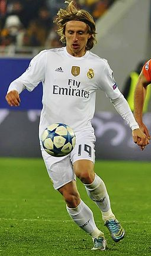

Real Madrid C.F. kits. Real Madrid in 1964. Nicknamed Los Blancos (the whites), the club has worn an all-white home kit except for one season in 1925 Real Madrid has maintained the white shirt for its home kit throughout the history of the club. There was, however, one season that the shirt and shorts were not both white. It was an initiative undertaken by Escobal and Quesada in 1925; the two were traveling through England when they noticed the kit worn by London-based team Corinthian F.C., one of the most famous teams at the time known for its elegance and sportsmanship. It was decided that Real Madrid would wear black shorts in an attempt to replicate the English team, but the initiative lasted just one year. After being eliminated from the cup by Barcelona with a 1–5 defeat in Madrid and a 2–0 defeat in Catalonia, President Parages decided to return to an all-white kit, claiming that the other kit brought bad luck. By the early 1940s, the manager changed the kit again by adding buttons to the shirt and the club's crest on the left breast, which has remained ever since. On 23 November 1947, in a game against Atlético Madrid at the Metropolitano Stadium, Real Madrid became the first Spanish team to wear numbered shirts. English club Leeds United permanently switched their blue shirt for a white one in the 1960s, to emulate the dominant Real Madrid of the era.
Real's traditional away colours are all blue or all purple. Since the advent of the replica kit market, the club has also released various other one colour designs, including red, green, orange and black. The club's kit is manufactured by Adidas, whose contract extends from 1998. Real Madrid's first shirt sponsor, Zanussi, agreed for the 1982–83, 1983–84 and 1984–85 seasons. Following that, the club was sponsored by Parmalat and Otaysa before a long-term deal was signed with Teka in 1992. In 2001, Real Madrid ended their contract with Teka and for one season and used the Realmadrid.com logo to promote the club's website. Then, in 2002, a deal was signed with Siemens Mobile and in 2006, the BenQ Siemens logo appeared on the club's shirt Real Madrid's shirt sponsor from 2007 until 2013 was bwin.com following the economic problems of BenQ Siemens. Fly Emirates became their shirt sponsor in 2013, and in 2017 the club renewed their sponsorship with the airliner, signing a deal until 2022 worth €70 million per year. In 2015, Madrid signed a new 10-year contract with Adidas believed to be worth a total of £850 million (€1 billion), earning £59 million (€64 million) per season.
.jpg){kind=link}
{kind=link}